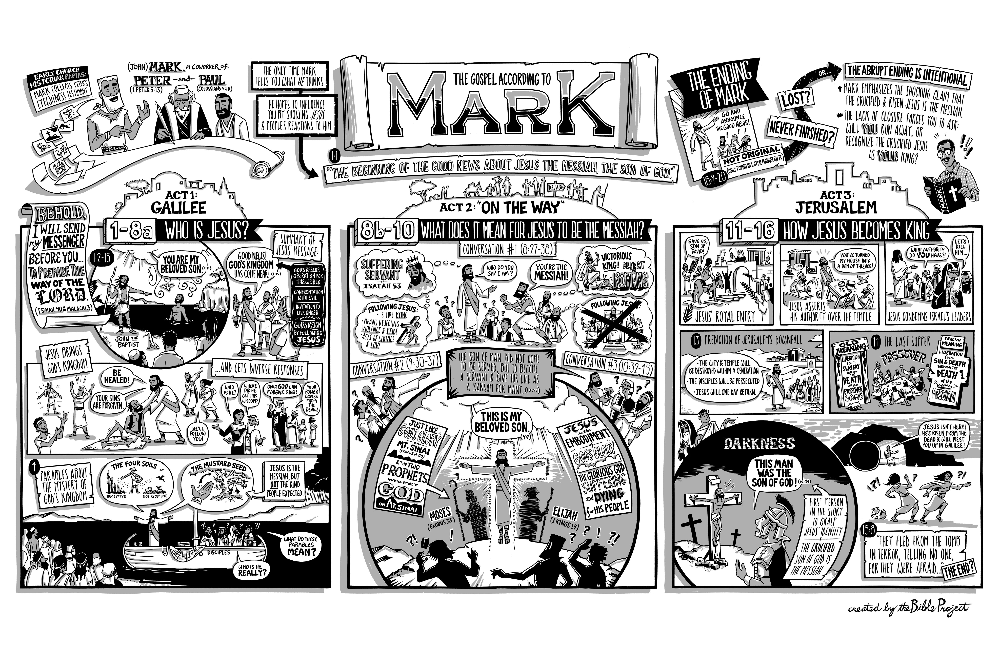

How to Read Mark
Mark moves quickly, but it is not shallow. The Gospel is carefully arranged. The opening line announces Jesus as the Messiah and Son of God, but from there Mark mostly lets the story reveal that claim through Jesus' actions, words, conflicts, suffering, death, and resurrection. The reader is meant to watch how everyone around Jesus responds and then decide how they will respond too.
Mark presents Jesus as the suffering Messiah who becomes king through service, rejection, death, and resurrection.
Again and again, people ask or imply the question: Who is this? The crowds marvel, the demons know, the disciples misunderstand, the leaders oppose, and finally a Roman centurion confesses at the cross, "Truly this man was the Son of God."
- How often Mark uses urgency and movement.
- The tension between Jesus' power and his hidden identity.
- The repeated failure of the disciples to understand him.
- The shift from Galilee → the road to Jerusalem → the city itself.
- How Jesus redefines messiahship around suffering and service.
- How the ending leaves the reader with a decision to make.
"The beginning of the good news of Jesus the Messiah, the Son of God."

Use this visual map as your high-level orientation: Act 1 in Galilee asks who Jesus is, Act 2 on the way asks what kind of Messiah he is, and Act 3 in Jerusalem shows how Jesus becomes king.
Do not read Mark as only a collection of miracle stories. Read it as a tightly arranged narrative argument. Every healing, conflict, question, prediction, and failure of understanding is helping Mark answer one major claim: the crucified Jesus is the Messiah and Son of God.
Each tab in this guide corresponds to a phase of the Project Context observational reading method. Work through the tabs roughly in order — deep literary analysis only lands once the big picture and structure are clear.
Historical and cultural context matters — but it comes after literary observation, not before. The goal of the first several passes is to hear what Mark is actually doing in the text. The Resources tab and secondary literature exist to deepen understanding, not replace reading.
The Three-Act Flow of Mark
A simple and useful way to read Mark is through its three major movements. This keeps the Gospel from feeling like a blur and helps you notice how each section develops a different part of Mark's argument.
| Movement | Main Question | Key Turn | What to Notice |
|---|---|---|---|
| 1:1–8:26 | Who is Jesus? | Miracles, conflict, growing amazement | Authority, secrecy, parables, partial sight, mixed responses |
| 8:27–10:52 | What does it mean that Jesus is the Messiah? | Peter's confession and first passion prediction | Three passion predictions, disciple failure, service, suffering, true greatness |
| 11:1–16:8 | How does Jesus become king? | Jerusalem entry and temple confrontation | Royal irony, judgment, Passover, cross, centurion confession, empty tomb |
Power
Jesus acts with divine authority over sickness, sin, nature, demons, and human institutions.
Misunderstanding
The disciples confess correctly but imagine the wrong kind of Messiah. Jesus must retrain their imagination.
Reversal
The Messiah is enthroned through humiliation. The cross becomes the place where his identity is finally recognized.
Suggested Reading Plan
This plan lets you read Mark in manageable units while keeping the flow intact. Each day includes a core focus so you know what to watch for on that pass through the text.
Best Practice for a Second Pass
- Read the whole Gospel in one sitting if possible.
- Then read again with a pencil and mark every question people ask about Jesus.
- On a third pass, mark every place the disciples fail to understand.
- On a fourth pass, track what Jesus says about the cross, service, and following him.
Key Themes to Track in Mark
Identity
Mark keeps pressing the question of Jesus' identity. Demons know him, crowds wonder, disciples hesitate, and the cross reveals what power alone did not.
Kingdom
Jesus announces that God's reign has come near. The kingdom does not arrive through spectacle alone but through confrontation with evil, forgiveness, and restored lives.
Discipleship
Following Jesus means more than admiring his power. It means receiving his way of self-giving service, humility, and cross-bearing.
Secrecy
Jesus often silences demons or crowds because people are ready for the wrong kind of Messiah.
Conflict
Religious leaders increasingly oppose Jesus because his authority threatens their structures and assumptions.
Failure
The disciples are not flattering portraits. Their failure is part of Mark's realism and part of his invitation to readers.
Reversal
The one who serves is greatest, the last becomes first, and the king reigns from a cross before an empty tomb.
"For even the Son of Man came not to be served but to serve, and to give his life as a ransom for many."
| Theme | Where it shows up | What it does in Mark |
|---|---|---|
| Son of God | 1:1, 1:11, 9:7, 15:39 | Frames the whole Gospel from divine declaration to human confession at the cross. |
| Kingdom of God | 1:14–15; parables in ch. 4 | Shows that Jesus is bringing God's reign, but in a form many do not expect. |
| Messianic misunderstanding | 8:27–10:52 | Exposes false expectations about triumph, greatness, and power. |
| Temple and authority | 11–13 | Shows Jesus acting with royal and priestly authority over Israel's center. |
| Fear and amazement | 4:41; 5:15; 16:8 | Keeps the reader from domesticating Jesus. He overwhelms categories. |
Jesus as the Ultimate Royal Priest
Mark is especially powerful when read with priestly and royal categories in mind. At his baptism, heaven opens and God declares Jesus his beloved Son — words blending Psalm 2, Genesis 22, and Isaiah 42 that function as a royal-priestly ordination. From there, Jesus acts like a priest operating outside the temple system: forgiving sins, restoring the impure, confronting the temple order, and quoting Psalm 110 to claim the role of the ruling priest at God's right hand. He wins the throne not through domination but through sacrificial offering — and when he dies, the temple curtain tears, releasing Eden's blessing into all creation.
Jesus as Philosopher, Prophet, and New Moses
Mark's Jesus is not only a healer or exorcist — he is a teacher of the first order, and Mark's opening summary (1:14–15) functions as the thesis statement of his entire mission: "The time is fulfilled, and the kingdom of God has come near; repent and believe the good news." This announcement draws directly from Daniel 7:22 (LXX: the time came and the holy ones possessed the kingdom) and Isaiah's herald announcing the return of Yahweh as King (Isa 40:9; 52:7).
Tim Mackie's classroom framework for Matthew applies with full force in Mark. Jesus inhabits three overlapping roles simultaneously:
New Moses
Jesus teaches God's covenant will with the authority of the One who gave the original Torah — not citing precedent but speaking in his own name ("I say to you"). His discipleship demands in Mark 8–10 are Deuteronomy-shaped: the call to follow him on the way parallels Moses' call to "choose life" at the Jordan.
Kingdom Herald
Mark's εὐαγγέλιον ("good news") in 1:1 and 1:15 is Isaiah's vocabulary (Isa 40:9; 52:7; 61:1). Jesus' healings, exorcisms, and forgiveness are not random demonstrations of power — they are kingdom-arrival events, signs that God's reign is breaking into creation and confronting everything that corrupts it.
True Philosopher
Like Israel's wisdom tradition and the ancient philosophical schools, Jesus forms a community of disciples around his person and teaching. The goal is not information transfer but character formation — producing people who embody the values of the kingdom and can distinguish between the way that leads to life and the way that leads to ruin.
Mark's compressed summary of Jesus' message ("The kingdom of God has come near") is the same announcement that saturates Matthew's Sermon on the Mount. For Mark, this is not an abstract theological claim — it is a declaration that the cosmic sovereignty promised in Daniel 7:13–14 to the "one like a Son of Man" is now arriving in Jesus' person and actions. Every miracle, exorcism, and act of forgiveness in chapters 1–8 is a demonstration of this arrival, not merely a display of power.
Chapter-by-Chapter Guide
Mark 1–2 · Arrival, Authority, and Immediate Conflict+
- John prepares the way; Jesus is baptized and declared God's beloved Son.
- Jesus proclaims the kingdom, calls disciples, teaches with authority, and casts out demons.
- He heals, cleanses a leper, forgives sins, calls Levi, and redefines sabbath assumptions.
Read for: authority, amazement, and the fact that conflict starts almost immediately.
Mark 3–4 · Dividing Lines and the Mystery of the Kingdom+
- Religious leaders harden against Jesus.
- Jesus appoints the Twelve and speaks about divided houses and true family.
- The parables explain why the kingdom is both present and hidden.
Read for: the growing split between openness and resistance.
Mark 5–6 · Authority Over Evil, Death, and Rejection+
- Jesus delivers the Gerasene demoniac, heals the woman, raises Jairus' daughter.
- He is rejected in Nazareth, sends the Twelve, and feeds the five thousand.
- John the Baptist's death casts a shadow over the mission.
Read for: power joined with vulnerability and rejection.
Mark 7–8 · Purity, Bread, Blindness, and Confession+
- Jesus relocates purity from external ritual to the human heart.
- He heals Gentiles, feeds another crowd, and warns about the yeast of the Pharisees.
- The blind man at Bethsaida is healed in stages, preparing for the disciples' partial sight.
- Peter confesses Jesus as Messiah.
Read for: partial understanding and the hinge into the middle act.
Mark 8:27–10 · The Way of the Cross+
- Three times Jesus predicts his suffering, death, and resurrection.
- Three times the disciples misunderstand greatness.
- The transfiguration confirms Jesus' identity, but the path still leads downward toward Jerusalem.
- Jesus teaches about receiving children, cutting off causes of stumbling, service, marriage, wealth, and true greatness.
Read for: the difference between admiration and actual discipleship.
Mark 11–13 · Jerusalem and Temple Crisis+
- Jesus enters Jerusalem as king.
- He enacts judgment on the temple and confronts the leaders.
- He predicts the destruction of the temple and speaks about watchfulness under pressure.
Read for: prophetic judgment, royal authority, and the collision between Jesus and Jerusalem's leadership.
Mark 14–16 · Passover, Cross, Burial, and Empty Tomb+
- The anointing at Bethany interprets Jesus' death before it happens.
- The last supper reframes Passover around Jesus' body and blood.
- Jesus is betrayed, denied, tried, crucified, and buried.
- The centurion's confession and the women at the tomb bring the Gospel to its provocative close.
Read for: irony, fulfillment, abandonment, and the open-ended summons to witness.
Study Questions for Mark
Observation Questions
- Where do people in Mark respond to Jesus with amazement, fear, faith, resistance, or confusion?
- What kinds of authority does Jesus display in chapters 1–8?
- How does Mark show that the disciples understand some things about Jesus but miss others?
- What changes after Peter's confession in 8:29?
Interpretive Questions
- Why does Mark let Jesus' identity unfold through the story rather than only through direct explanation?
- Why do the passion predictions stand so close to teaching about service, children, and greatness?
- How does the temple confrontation deepen the meaning of Jesus' mission?
- Why might Mark end so abruptly at 16:8?
Royal Priest Questions
- How does Jesus' baptism function as a priestly ordination? What three OT texts are woven together in 1:11?
- Where in Mark does Jesus exercise authority that belongs to the Jerusalem priesthood?
- What does the tearing of the curtain (15:38) signal about the old priestly order?
- How does Psalm 110 shape the way Mark presents Jesus' identity and mission?
Personal and Group Reflection
- Which version of Jesus is easiest for you to accept: powerful healer, wise teacher, suffering servant, or crucified king? Why?
- Where do you most resist Jesus' definition of greatness as service?
- What would it mean to follow Jesus "on the way" rather than only admire him from a distance?
- How does Mark push you to answer the question the disciples struggle with?
Practical Reading Tools
- Questions people ask about Jesus.
- Commands to silence or secrecy.
- Moments where fear and amazement appear together.
- Every passion prediction.
- Every place the disciples misunderstand greatness.
- Royal and priestly language in chapters 11–15.
- Q = key question about Jesus
- M = misunderstanding
- K = kingdom statement or action
- X = conflict with leaders
- C = cross-shaped discipleship
- R = royal or priestly signal
| Text to Anchor | Why It Matters |
|---|---|
| Mark 1:15 | Summarizes Jesus' kingdom announcement. |
| Mark 1:11 | Royal-priestly ordination at baptism (Ps 2 + Gen 22 + Isa 42). |
| Mark 8:29 | Peter's confession marks the hinge of the Gospel. |
| Mark 8:34 | Defines discipleship in cross-shaped terms. |
| Mark 9:35 | Redefines greatness. |
| Mark 10:45 | One of the clearest summary statements in the whole book. |
| Mark 12:35–37 | Psalm 110 citation — Jesus claims the royal-priestly role. |
| Mark 15:38–39 | Curtain torn + centurion confession: identity finally recognized. |
Mark is meant to move you, not merely inform you. It is a Gospel of pressure, urgency, fear, failure, revelation, and decision. Read it with your eyes open for the cross at the center and for the way Jesus keeps redefining what power, kingship, priesthood, and discipleship really mean.
This is the systematic reading method behind the whole guide. Work through these phases over multiple sittings — each one builds on the one before it. The guardrail: observe what the text does before consulting any tools.
Major Chiastic Structures in Mark
Mark is not just a rapid-fire story collection. He is a careful literary architect who uses chiasm (a mirror-image ABCB'A' pattern) and the sandwich technique (intercalation) to create meaning through structure. Noticing these patterns changes how you read the text.
The Five Conflict Stories
Mark opens Jesus' public ministry with five controversy stories arranged in a careful arch. The center — the question about fasting and new wine — is the theological hinge: Jesus is not patching an old system but bringing something entirely new. The outer pairs mirror each other around that claim.
The Way of the Cross — Blind Man Bookends
The entire middle section of Mark is framed by two healings of blind men (Bethsaida, 8:22–26; Bartimaeus, 10:46–52). Between them, the disciples progressively fail to "see" Jesus for who he is. Three passion predictions anchor three symmetrical cycles of misunderstanding and correction.
The Passion Trial Chiasm
The trial and crucifixion sequence forms a precise chiastic arch where Jewish and Roman settings mirror each other, with the Roman judgment at the center. Each panel ironically crowns and mocks Jesus even as it reveals his true identity.
The Markan Sandwich (Intercalation)
Mark's most distinctive compositional tool is the intercalation — often called a "Markan sandwich." He interrupts Story A with Story B, then completes Story A. The interrupting story interprets the outer story, and vice versa. Mark uses this at least six times.
When you see Mark interrupt a story with another story, pause and ask: How does the inserted story interpret the outer story? How does the outer story reframe the inserted one? The meaning lives in the gap between the two. Mark never uses the sandwich accidentally.
Wordplay & Verbal Patterns in Mark
Mark writes in relatively simple Koine Greek, but his simplicity is strategic. He returns to key words repeatedly, positions them at structural turning points, and sometimes uses the same word across wildly different scenes to create irony or depth. These patterns are lost in translation unless you know to look for them.
Mark's signature word. He uses it more than any other NT writer — nearly once per paragraph in chapters 1–6. It creates a breathless, urgent, forward-hurtling narrative momentum. Jesus does not reflect; he acts. The kingdom does not wait; it arrives. Scholars sometimes call this Mark's "parataxis" style: rapid short sentences linked by καί ("and") and εὐθύς.
The urgency is not accidental. Mark presents a world in the grip of evil that needs decisive rescue — and a king who moves without delay. When εὐθύς clusters slow in the passion narrative (chapters 14–16), the contrast is striking: here the pace changes to deliberate suffering.
One of Mark's most theologically loaded words. It operates on three levels simultaneously: (1) the literal road from Galilee to Jerusalem; (2) the messianic way prophesied in Isaiah 40:3 ("Prepare the way of the Lord") — which Mark quotes in 1:2–3; and (3) the way of discipleship that Jesus himself defines.
The climax of Act 2 is perfectly positioned: Bartimaeus is healed and immediately "followed him on the way" (10:52 — ἐν τῇ ὁδῷ). He models what the disciples throughout chapters 8–10 refused to do. The whole journey section is framed as a question: will you follow Jesus on his way?
Mark uses this violent, irreversible word exactly twice — and the two uses form the Gospel's deepest structural bracket. At the baptism, the heavens are "torn open" (σχιζομένους) and God declares Jesus his Son (1:10). At the death, the temple curtain is "torn in two" (ἐσχίσθη) from top to bottom (15:38). Both are unambiguously acts of God. Both are followed by a declaration of Jesus' identity.
Heavens tear → Spirit descends → "You are my Son" (divine voice, private)
Curtain tears → Darkness ends → "This man was the Son of God" (human voice, public)
The word does not mean "open gently." It means rip. Mark is saying that Jesus' arrival and death are world-rupturing events. The barrier between heaven and earth — represented first by the sky at the Jordan, then by the veil before the Holy of Holies — does not open; it is destroyed.
τοῦ ἀνθρώπου
Jesus' self-designation appears in three distinct clusters that trace the arc of the whole Gospel: authority → suffering → glory. Mark never explains the title; the reader is expected to trace its trajectory and feel its weight building.
2:10 forgives sins · 2:28 Lord of Sabbath
8:38 returns in glory · 13:26 on the clouds · 14:62 at God's right hand
The middle cluster (suffering) is the largest: 8:31, 9:9, 9:12, 9:31, 10:33, 10:45, 14:21 (×2), 14:41. Mark uses the title most densely in Act 2 — the same section structured by the blind-man chiasm — to insist that the route from authority to glory runs through the cross. The Daniel 7 figure who receives the kingdom comes to earth not to be served, but to give his life as a ransom (10:45).
Mark's "rebuke" word carries exorcism-level authority. It is the word Jesus uses to silence unclean spirits (1:25), to rebuke a fever (in parallel accounts), to silence the crowd's messianic acclaim (3:12), and — most shockingly — to rebuke Peter (8:33) with the words "Get behind me, Satan."
The irony is structured: in 8:32, Peter "rebukes" (ἐπιτιμᾶν) Jesus for predicting the cross. In 8:33, Jesus rebukes (ἐπετίμησεν) Peter right back using the same word he uses against demons. The verbal echo is intentional. Mark is saying Peter's resistance to the cross is not merely misguided — it belongs to the same category as demonic opposition.
In the central section of Act 1, the word "bread" (ἄρτος) accumulates with deliberate intensity: the feeding of the 5,000 (6:30–44), Jesus walking on water while the disciples "did not understand about the loaves" (6:52), the controversy about bread and tradition (7:1–23), the Syrophoenician woman's reply about "children's bread" (7:27–28), the feeding of the 4,000 (8:1–10), and the disciples arguing about having no bread in the boat (8:14–21).
Jesus ends the sequence with a frustrated double question: "Do you not yet understand? Do you not yet perceive?" (8:17–18). He lists both feedings and asks: "How many baskets?" The point is not mathematics. The point is that the disciples should have understood who he is from the bread. Mark is weaving eucharistic and identity themes together — the one who multiplies bread is the one who will give his body (14:22).
In 8:34, Jesus calls the crowd and his disciples and says: "If anyone would come after me, let him deny himself" (ἀπαρνησάσθω ἑαυτόν). The same verb appears nowhere else in Mark until the passion — when Peter denies (ἀπαρνήσομαι) Jesus three times (14:30–31, 72).
The irony is devastating. Jesus calls disciples to self-denial; Peter practices a different kind of denial entirely — he denies his Lord rather than himself. Mark has pre-loaded the word in chapter 8 so that the reader feels its full weight when it reappears in chapter 14. Peter did not deny himself to follow Jesus on the way. Instead, he denied Jesus to save himself.
This intensified compound verb — "looked around on all sides" — is virtually unique to Mark among the Gospels. It always describes Jesus' gaze, never anyone else's in this form. It appears at moments of confrontation, challenge, or intimate recognition. The word creates a characteristic Markan scene: Jesus stops, slowly scans the room or crowd, and acts with deliberate divine authority.
This is one of Mark's most vivid portrait touches. Matthew and Luke tend to smooth it over, but Mark keeps it because it communicates something about Jesus' searching, knowing, authoritative gaze.
"Do you not yet understand? Do you not yet perceive? Are your hearts hardened? Having eyes do you not see, and having ears do you not hear?"
Mark's "blindness" vocabulary (βλέπω, ὁράω, ὀφθαλμός, τυφλός) runs through the whole Gospel as a spiritual diagnostic. The two blind men who are healed (8:22–26, 10:46–52) bracket the section where the disciples are most spiritually blind. Meanwhile, the demons always "see" Jesus clearly, the woman with the hemorrhage "sees" her healing, and finally a Gentile centurion "sees" and confesses at the cross (15:39). Mark asks the reader: which kind of seeing do you have?
Resources for Reading Mark
Sources organized by category using the Project Context 5.8.1 bibliography format. BibleProject video and classroom resources are listed first as they provide the primary framing methodology. Academic commentaries and specialized studies follow. All sources are cited in Chicago Manual of Style, 17th edition.

BibleProject Video & Classroom Resources
Primary framing resources — the interpretive methodology behind this guide
BibleProject Video & Classroom Resources
Primary framing resources — the interpretive methodology behind this guide
Gospel of Mark
Royal Priest Theme
Mark Overview Poster (printable): Download 44-Mark-FNL.jpg
Gehenna Word Study
Classroom — Messianic Torah & Rise of the Messiah
Thematic Studies Referenced in This Guide
On BibleProject sources: Video transcripts and classroom notes are used as primary framing resources reflecting Tim Mackie's methodology of literary design, canonical reading, Hebrew wordplay, and intertextual connections — the interpretive approach that shapes Project Context studies.
Mark Commentaries
Primary exegetical sources for the Gospel of Mark
Mark Commentaries
Primary exegetical sources for the Gospel of Mark
Major Academic Commentaries
Son of Man & Christology
Isaiah, Intertextual Connections & Gospel Methodology
The OT narrative background and approach to reading the Gospels as literature
Isaiah, Intertextual Connections & Gospel Methodology
The OT narrative background and approach to reading the Gospels as literature
Isaiah & New Exodus
Kingdom & Gospel Reading
Kingdom Background & Jesus' Teaching Method
Primary & Reference Sources
Greek and Hebrew critical texts, lexicons, and Second Temple literature
Primary & Reference Sources
Greek and Hebrew critical texts, lexicons, and Second Temple literature
Critical Texts
Lexicons & Reference Works
Second Temple & Jewish Sources
Citation Format: Chicago Manual of Style, 17th edition.
On usage tags: Tags reference the tab in this study guide where each source most directly informs the content. Sources may inform multiple tabs.